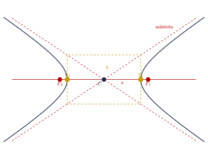
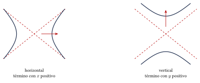
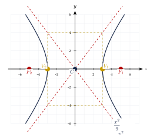
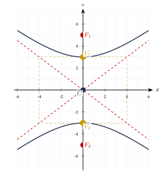
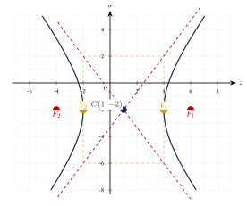

Capítulo 36
Hipérbola
UNAM IPN
La hipérbola es una sección cónica formada por dos ramas. Para resolver ejercicios es importante identificar el centro, la orientación del eje transverso y los valores de \(a\), \(b\) y \(c\).
También deben determinarse los vértices, los focos y las asíntotas.
36.1 Definición y elementos#
La hipérbola es el conjunto de puntos del plano para los que el valor absoluto de la diferencia de las distancias a dos puntos fijos, llamados focos, es constante.
Si \(P\) pertenece a la hipérbola, entonces:
Los elementos principales de una hipérbola son:
- Centro \(C\): punto medio entre los focos y entre los vértices.
- Vértices \(V_1\) y \(V_2\): puntos de las ramas más cercanos al centro.
- Focos \(F_1\) y \(F_2\): puntos fijos utilizados en la definición de la hipérbola.
- Semieje transverso \(a\): distancia del centro a cualquiera de los vértices.
- Semieje conjugado \(b\): medida utilizada para construir el rectángulo auxiliar y las asíntotas.
- Semidistancia focal \(c\): distancia del centro a cualquiera de los focos.
- Asíntotas: rectas a las que se aproximan las ramas de la hipérbola.
- Excentricidad \(e\): medida de la abertura de la hipérbola.
- Lado recto: cuerda perpendicular al eje focal que pasa por uno de los focos.
Las longitudes principales son:
En toda hipérbola se cumple:
Por tanto:
Además:
La excentricidad de una hipérbola es:
En toda hipérbola:
La longitud de cada lado recto es:
Los elementos principales de una hipérbola horizontal se muestran en la siguiente figura:

36.2 Formas ordinarias#
36.2.1 Hipérbola horizontal#
Sus elementos son:
Sus asíntotas son:
Las ramas abren hacia la derecha y hacia la izquierda.
36.2.2 Hipérbola vertical#
Sus elementos son:
Sus asíntotas son:
Las ramas abren hacia arriba y hacia abajo.
La orientación de una hipérbola se determina observando el término positivo:
- si el término positivo contiene \(x\), la hipérbola es horizontal;
- si el término positivo contiene \(y\), la hipérbola es vertical.
En una hipérbola, el denominador \(a^2\) se encuentra debajo del término positivo.
No es necesario que \(a^2\) sea el denominador mayor.

36.3 Centro en el origen#
Cuando:
las ecuaciones se simplifican.
36.3.1 Horizontal#
Las asíntotas son:
36.3.2 Vertical#
Las asíntotas son:
Encuentra la ecuación de la hipérbola con vértices:
y focos:
Ver solución
La hipérbola es horizontal y su centro es:
De los vértices:
De los focos:
Aplicamos:
Entonces:
Por tanto:
Las asíntotas son:
La excentricidad es:

Encuentra los elementos principales de:
Ver solución
El término positivo contiene \(y\), por lo que la hipérbola es vertical.
Calculamos:
El centro es:
Los vértices son:
Los focos son:
Las asíntotas son:
La excentricidad es:
La longitud del lado recto es:

36.4 Centro fuera del origen#
Encuentra los elementos principales de:
Ver solución
El centro es:
El término positivo contiene \(x\), por lo que la hipérbola es horizontal.
Calculamos:
Los vértices son:
Los focos son:
Las asíntotas son:
La excentricidad es:

36.5 Rectángulo auxiliar y asíntotas#
Las asíntotas pueden construirse mediante un rectángulo centrado en:
- En una hipérbola horizontal, el rectángulo tiene semibase \(a\) y semialtura \(b\).
- En una hipérbola vertical, el rectángulo tiene semibase \(b\) y semialtura \(a\).
Las diagonales del rectángulo son las asíntotas.
Las ramas de la hipérbola se aproximan a las asíntotas, pero las asíntotas no forman parte de la hipérbola.
36.6 De la forma general a la ordinaria#
Una hipérbola no rotada puede aparecer en la forma:
Los coeficientes \(A\) y \(C\) tienen signos opuestos.
Para obtener la forma ordinaria se completan cuadrados.
Transforma:
a la forma ordinaria.
Ver solución
Agrupamos:
Factorizamos:
Completamos cuadrados:
Factorizamos:
Dividimos entre \(36\):
Por tanto:
Calculamos:
La hipérbola es horizontal.
Los vértices son:
Los focos son:
Las asíntotas son:

36.7 Procedimiento rápido#
- Escribe la ecuación en forma ordinaria.
- Identifica el centro: \[C(h,k).\]
- Localiza el término positivo.
- Determina la orientación.
- Identifica: \[a^2 \qquad\text{y}\qquad b^2.\]
- Calcula: \[c=\sqrt{a^2+b^2}.\]
- Encuentra los vértices y los focos.
- Obtén las asíntotas.
- Calcula, si se solicita: \[e=\frac{c}{a}\] y: \[|LR|=\frac{2b^2}{a}.\]
36.8 Resumen#
Asíntotas:
para la hipérbola horizontal, y:
para la hipérbola vertical.
36.9 Errores frecuentes#
Recuerda:
- El término positivo determina la orientación.
- El denominador del término positivo es \(a^2\).
- En una hipérbola no es necesario que: \[a>b.\]
- La relación correcta es: \[c^2=a^2+b^2.\]
- En una hipérbola: \[c>a.\]
- Los focos pertenecen al eje transverso.
- Las asíntotas pasan por el centro.
- La ecuación debe ser igual a \(1\) antes de identificar correctamente \(a^2\) y \(b^2\).
- Los coeficientes de \(x^2\) y \(y^2\) tienen signos opuestos.
- La excentricidad siempre cumple: \[e>1.\]
36.10 Ejercicios propuestos#
Encuentra la ecuación de la hipérbola con vértices:
y focos:
Determina también sus asíntotas.
Ver solución
Hipérbola horizontal con centro \(C(0,0)\), \(a = 4\) y \(c = 6\): \[b^2 = c^2 - a^2 = 36 - 16 = 20.\] Ecuación: \[\frac{x^2}{16} - \frac{y^2}{20} = 1.\] Asíntotas: \(y = \pm\frac{\sqrt{20}}{4}x = \pm\frac{\sqrt{5}}{2}x\).
Encuentra la ecuación de la hipérbola con vértices:
y focos:
Determina también sus asíntotas.
Ver solución
Hipérbola vertical con centro \(C(0,0)\), \(a = 3\) y \(c = 5\): \[b^2 = c^2 - a^2 = 25 - 9 = 16.\] Ecuación: \[\frac{y^2}{9} - \frac{x^2}{16} = 1.\] Asíntotas: \(y = \pm\frac{3}{4}x\).
Encuentra el centro, los vértices, los focos, las asíntotas y la excentricidad de:
Ver solución
Hipérbola horizontal, centro \(C(0,0)\). \(a^2 = 16 \Rightarrow a = 4\); \(b^2 = 9 \Rightarrow b = 3\). \[c^2 = 16 + 9 = 25 \Longrightarrow c = 5.\] Vértices: \(V_1(4, 0)\), \(V_2(-4, 0)\). Focos: \(F_1(5, 0)\), \(F_2(-5, 0)\). Asíntotas: \(y = \pm\frac{3}{4}x\). Excentricidad \(e = \frac{5}{4}\).
Encuentra el centro, los vértices, los focos y las asíntotas de:
Ver solución
Hipérbola vertical, centro \(C(0,0)\). \(a^2 = 25 \Rightarrow a = 5\); \(b^2 = 144 \Rightarrow b = 12\). \[c^2 = 25 + 144 = 169 \Longrightarrow c = 13.\] Vértices: \(V_1(0, 5)\), \(V_2(0, -5)\). Focos: \(F_1(0, 13)\), \(F_2(0, -13)\). Asíntotas: \(y = \pm\frac{5}{12}x\).
Encuentra los elementos principales de:
Ver solución
Hipérbola horizontal con centro en \(C(-2, 1)\). \(a^2 = 9 \Rightarrow a = 3\), \(b^2 = 16 \Rightarrow b = 4\). \[c^2 = 9 + 16 = 25 \Longrightarrow c = 5.\] Vértices: \(V_1(1, 1)\), \(V_2(-5, 1)\). Focos: \(F_1(3, 1)\), \(F_2(-7, 1)\). Asíntotas: \(y - 1 = \pm\frac{4}{3}(x + 2)\).
Encuentra los elementos principales de:
Ver solución
Hipérbola vertical con centro en \(C(1, -3)\). \(a^2 = 16 \Rightarrow a = 4\), \(b^2 = 9 \Rightarrow b = 3\). \[c^2 = 16 + 9 = 25 \Longrightarrow c = 5.\] Vértices: \(V_1(1, 1)\), \(V_2(1, -7)\). Focos: \(F_1(1, 2)\), \(F_2(1, -8)\). Asíntotas: \(y + 3 = \pm\frac{4}{3}(x - 1)\).
Transforma a la forma ordinaria y determina el centro, los vértices, los focos y las asíntotas:
Ver solución
Agrupamos y completamos TCP: \[(x^2 + 4x) - 4(y^2 - 2y) = 4.\] \[(x^2 + 4x + 4) - 4(y^2 - 2y + 1) = 4 + 4 - 4 = 4.\] \[(x + 2)^2 - 4(y - 1)^2 = 4.\] \[\frac{(x + 2)^2}{4} - \frac{(y - 1)^2}{1} = 1.\] Es una hipérbola horizontal con centro en \(C(-2, 1)\), \(a = 2\), \(b = 1\), \(c = \sqrt{4 + 1} = \sqrt{5}\). Vértices: \(V_1(0, 1)\), \(V_2(-4, 1)\). Focos: \(F_1(-2 + \sqrt{5}, 1)\), \(F_2(-2 - \sqrt{5}, 1)\). Asíntotas: \(y - 1 = \pm\frac{1}{2}(x + 2)\).